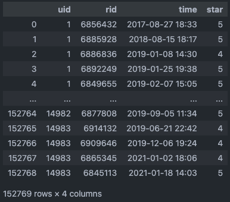
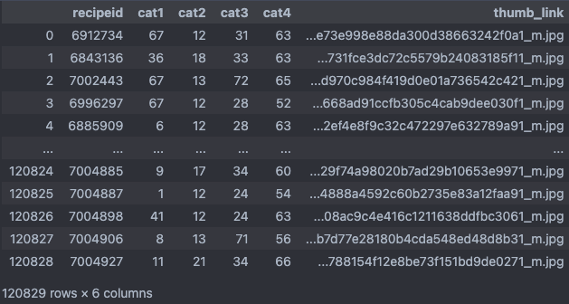
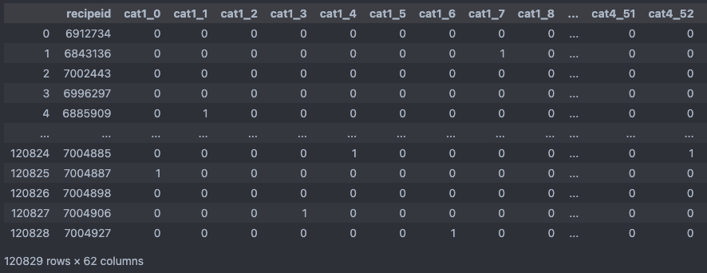
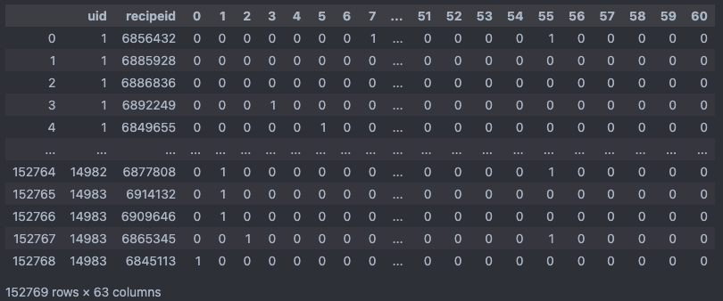
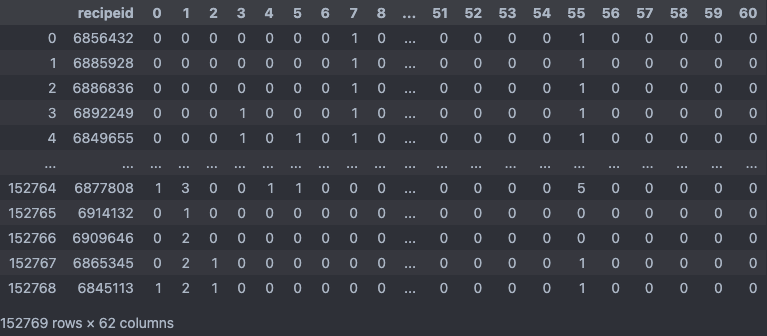
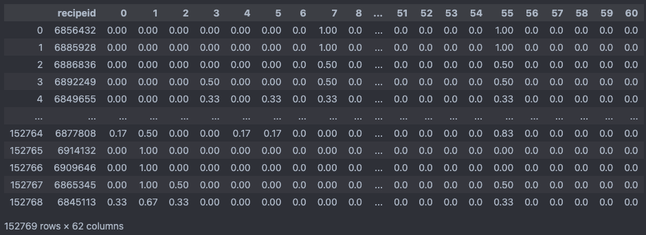
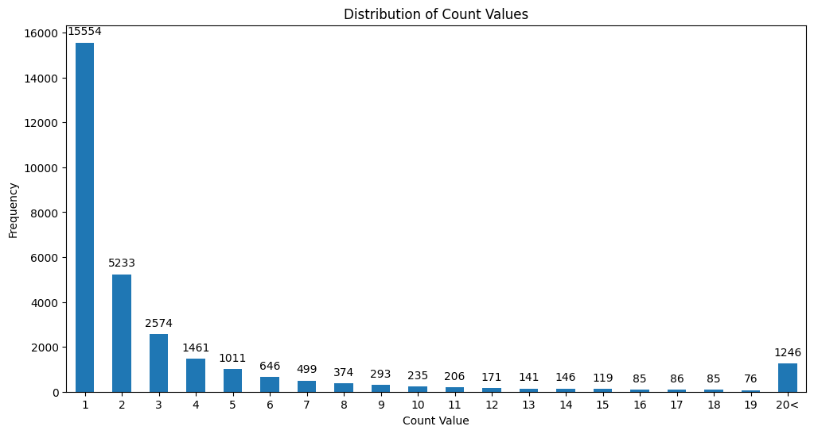
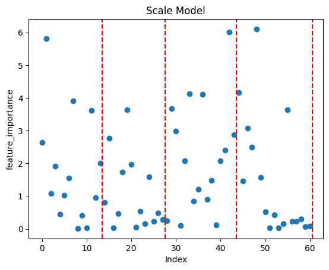
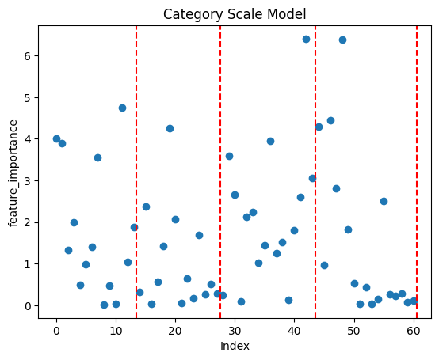
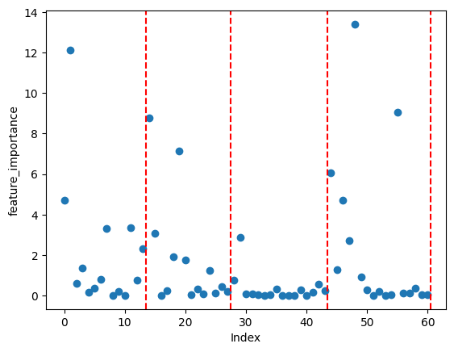

[Final Project] Catboost 모델
[Final Project] CatBoostClassifier 모델
레시피 추천 프로젝트를 진행하면서, 사용자가 클릭한 레시피와 같은 정보는 기업 내부 정보이기 때문에 얻을 수 없었기 때문에 유저나 남긴 평점을 기반으로 데이터셋을 구성하였습니다.
대부분 사용자-아이템 간의 상호 작용을 기반으로 하여 모델을 개발해서 인풋값에 사용자 id가 포함이 되어야 하는 경우가 생겼고, 새로운 유저가 추가되면 새롭게 모델을 학습을 하거나 연산을 해야 되는 문제들이 있었습니다.
그래서 이러한 의존성을 없애고자 연구를 진행 하였습니다.
01. datasets
| - User Ratings Dataset [user_df] | - Recipe Category Dataset [cate_df] |
|---|---|
|  |  |
| - uid: 유저 식별 번호 - 14983 users - rid: 레시피 식별 번호 - 30241 recipes - time: 평점을 남긴 시간 - star: 평점 - 1 ~ 5 scores |
- recipeid: 레시피 식별 번호 - 120829 recipes - cat1: 방법별 [볶음, 끓이기, 부침, 조림, …] - 14 types - cat2: 상황별 [일상, 접대, 술안주, 다이어트, …] - 14 types - cat3: 재료별 [소고기, 돼지고기, 밀가루, 버섯류, …] - 16 types - cat4: 종류별 [밑반찬, 찌개, 디저트, 양식, …] - 17 types - thumb_link: 썸네일 주소 |
공통 데이터셋 중에서 2개의 데이터셋을 사용하여 학습 데이터를 구성하였습니다.
02. 데이터 전처리
2.1 [user_df / cate_df] load & Pre-processing
-
user_df
# 유저 레시피 평점 상호작용 데이터 로드 및 전처리 user_df = pd.read_csv(os.path.join(DATA_DIR_PATH, USER_DATA_CSV_NAME)) user_df.rename(columns={'rid': 'recipeid'}, inplace=True) user_df.drop(['star'], axis=1, inplace=True)cate_df와 병합을 위해 columns의 이름을 맞춰주고, 이번에는 평점 데이터를 삭제합니다.
목표가 유저가 관심을 가지고 접근한 레시피를 기반으로 추천을 하는 것이기 때문에 평점을 매겼다는 것은 “해당 레시피에 관심을 가지고 접근을 하였다”의 개념으로 처리하기 위해 코드를 작성하였습니다. -
cate_df
cate_df = pd.read_csv(os.path.join(DATA_DIR_PATH, CATEGORY_DATA_CSV_NAME)) cate_df = cate_df.drop(['thumb_link'], axis=1) offset = 0 for col in cate_df.columns[1:]: unique_vals = sorted(cate_df[col].unique()) mapping_dict = {val: i for i, val in enumerate(unique_vals, start=offset)} cate_df[col] = cate_df[col].map(mapping_dict) offset += len(unique_vals)카테고리를 원핫 인코딩을 했을 떄 접근 하기 쉽게 0 ~ 60 범위로 변경하였습니다
print(sorted(cate_df['cat1'].unique())) print(sorted(cate_df['cat2'].unique())) print(sorted(cate_df['cat3'].unique())) print(sorted(cate_df['cat4'].unique()))> [0, 1, 2, 3, 4, 5, 6, 7, 8, 9, 10, 11, 12, 13] > [14, 15, 16, 17, 18, 19, 20, 21, 22, 23, 24, 25, 26, 27] > [28, 29, 30, 31, 32, 33, 34, 35, 36, 37, 38, 39, 40, 41, 42, 43] > [44, 45, 46, 47, 48, 49, 50, 51, 52, 53, 54, 55, 56, 57, 58, 59, 60]
2.2 one-hot 인코딩
-
get_dummies()
pandas 라이브러리의 함수로, 주로 범주형 변수를 원-핫 인코딩 방식으로 변환할 때 사용
df_encoded = pd.get_dummies(cate_df, columns=["cat1", "cat2", "cat3", "cat4"]) df_encoded = df_encoded.astype(int)원-핫 인코딩을 하는 과정에서 False, True로 표현이 되는 데, dataframe 타입을 나중에 합 연산을 하는 과정이 있기 때문에 bool -> int로 변경하여 0, 1로 표현
- df_encoded

-
user_df와 df_encoded 결합
new_columns = ["recipeid"] + [str(i) for i in range(len(df_encoded.columns) - 1)] df_encoded.columns = new_columns user_data_df = pd.merge(user_df, df_encoded, on="recipeid").sort_values(by=["uid", "time"]).reset_index(drop=True) user_data_df = user_data_df.drop(['time'], axis=1)열 이름을 변경한 후에, “recipeid”를 기준으로 “user_df”와 “df_encoded”를 합치면서, uid 순으로 정렬한 후에 같은 uid 내에서 time에 따라 정렬을 해줍니다.
행들의 순서를 유지하면서 전처리를 할 예정이기 때문에 time을 제거하였습니다.- user_data_df

2.3 Train Dataset 생성
-
카테고리 그룹별 누적합 계산
df_grouped = user_data_df.groupby("uid").apply(lambda x: x.iloc[:, 2:].cumsum()).reset_index(drop=True) df_grouped = pd.concat([user_data_df[["recipeid"]], df_grouped], axis=1)user_data_df의 “uid”를 기준으로 그룹을 만들어 각 그룹 내에서 이전 행들의 값들을 현재 행에 더하여 누적 값을 얻습니다.
추가로 그룹화한 후 인덱스가 MultiIndex 형태로 설정되기 때문에 인덱스 초기화를 하여 원래데로 되돌린 후 user_data_df의 “recipeid” 열을 합쳐 “df_grouped”을 생성합니다.
- 코드 최적화
cols_to_cumsum = user_data_df.columns[2:] df_grouped = user_data_df.copy() df_grouped[cols_to_cumsum] = user_data_df.groupby("uid")[cols_to_cumsum].transform(lambda x: x.cumsum()) df_grouped = pd.concat([user_data_df[["recipeid"]], df_grouped[cols_to_cumsum]], axis=1)보통 lamda가 결합하여 사용 될 경우에는 순차적으로 함수를 적용을 해서 큰 데이터를 처리할 때 시간이 오래 걸렸습니다.
그래서 더 좋은 방법이 있을까 찾던 중에 transform을 사용하면 좀 더 빠르게 처리가 된다는 것을 보았고 적용해 보았습니다.
시간은 apply는 1.6s, transform은 1.1s로 transform이31.25%빠른 속도를 보였습니다.- apply와 transform의 속도 차이 이유
- 결과의 형태:
apply: 그룹별로 함수를 적용하고, 그 결과를 합쳐서 새로운 데이터 구조를 반환한다. 반환되는 구조는 적용된 함수와 그룹의 형태에 따라 달라진다.transform: 그룹별로 함수를 적용하지만, 원래의 데이터와 동일한 shape의 결과를 반환한다. 이는 각 그룹에 대해 동일한 크기의 결과를 반환해야 함을 의미한다.
- 속도:
- 일반적으로
transform은apply보다 더 빠르게 동작하는 경우가 많다. 이는transform이 데이터의 원래 구조를 유지하기 위해 최적화되어 있기 때문이다. 또한transform은 보통 단순한 요소별 연산에 더 적합하기 때문에 이러한 연산에서는 빠른 성능을 나타낼 수 있다. - 반면,
apply는 보다 일반적인 목적으로 사용되며, 그룹별로 다양한 연산을 수행할 수 있다. 따라서,apply는transform보다 유연하지만, 일부 경우에는 더 느릴 수 있다.
- 일반적으로
- 사용 사례:
transform: 각 그룹에 동일한 연산을 적용하고 원래의 DataFrame 크기와 동일한 결과를 원할 때 주로 사용된다. 예를 들어, 각 그룹별 평균을 계산하여 원래의 데이터셋에 추가하고 싶을 때 사용할 수 있다.apply: 그룹에 대해 더 복잡한 연산을 수행하거나, 그룹별로 다른 형태의 결과를 반환하고 싶을 때 사용된다.
결론적으로,
transform은 원래의 데이터 구조를 유지하면서 그룹별로 간단한 연산을 수행하는 데 최적화되어 있기 때문에, 그에 해당하는 작업에서는 일반적으로apply보다 더 빠른 성능을 보인다. - 결과의 형태:
-
각 행 별로 스케일링
max_values = df_grouped.iloc[:, 1:].max(axis=1) df_grouped.iloc[:, 1:] = df_grouped.iloc[:, 1:].div(max_values, axis=0).round(2)첫번째(recipeid)열을 제외한 모든 값들을 독립적으로 해당 행의 최대값으로 나누어 스케일링을 해주었습니다.
해당 코드를 통해 각각의 행들의 최대값을 1로 만들고, 다른 모든 값을 0과 1 사이의 값으로 변환하였습니다.
 -
출현 빈도가 작은 레시피 제거
# 레시피 상호작용이 10회 이하인 유저 제외 df_grouped = df_grouped.groupby('recipeid').filter(lambda x: len(x) > 10) # 인덱스 초기화하면서 기존 인덱스 삭제 df_grouped = df_grouped.reset_index(drop=True)가장 고민이 많이 되었던 부분입니다.

각 레시피의 출현 빈도를 나타낸 그래프입니다. 대다수의 레시피가 1번 출현한 적이 많았습니다. 처음에는 사분위수로 데이터를 자르려 했지만, Q1: 1.0, Q2: 1.0, Q3: 3.0으로 불균형이 심해서 임의로 출현 빈도가 10 이하의 레시피를 제거하였습니다.
자른 후에 총 레시피 종류는 2361개가 남았습니다.
중간에 했던 고민으로는 SMOTE로 데이터의 불균형을 해소 할 수 있을 까라고 고민을 하였지만, 소수 클래스에 적합한 개념이였고, 다중 클래스에 적용하기에는 적합하지 않은 것으로 판단되었습니다.지금 생각하고 있는 개선법은 자르는 빈도를 다르게하여 학습시켜 모델의 테스트 성능을 비교하는 방법을 생각하고 있습니다.
그 과정에서도 클래스의 개수가 늘어나면서 추천의 가짓수는 커지지만 정확도는 떨어질 것으로 예상하고 있습니다.
03. CatBoostClassifier 학습
Github Link - https://github.com/boostcampaitech5/level3_recsys_finalproject-recsys-10/blob/main/Model/catboost_recipe_classifier/train.py
- loss_function
CatBoost 내의 MultiClass loss funtion으로 학습을 하였습니다.
CrossEntropyLoss랑 동일 하다고 하며 다중 클래스 분류 작업에 주로 사용되는 손실 함수입니다.
내용 장점 강건성: 로짓과 참 클래스 간의 차이를 극대화하면서 다른 클래스에 대한 예측 확률을 감소시키려고 합니다. 이 특성은 모델이 높은 확신을 가지고 예측할 때 더 나은 성능을 보여줍니다.
자동 정규화: Softmax 함수가 로짓을 확률 분포로 자동으로 변환하므로 로짓의 크기가 클 수록 모델의 확신도가 높아집니다.
수치 안정성:CrossEntropyLoss는 내부적으로 log와 softmax를 결합하므로 수치적 안정성이 있습니다.
일반적으로 잘 작동: 다중 클래스 분류 문제에서 잘 작동하는 것으로 알려져 있습니다. 많은 실제 문제와 벤치마크에서 효과적입니다.단점 한 클래스의 오버샘플링: 한 클래스의 샘플이 다른 클래스보다 훨씬 많을 경우, 모델은 많은 클래스를 선호할 수 있습니다. 이를 극복하기 위해 클래스 가중치나 샘플 가중치를 사용할 수 있습니다.
다중 레이블 분류 문제에 적합하지 않음:CrossEntropyLoss는 각 입력 샘플에 대해 하나의 클래스 레이블만을 예상합니다. 다중 레이블 분류를 위해서는 다른 손실 함수가 필요합니다.
수치적 불안정: 매우 큰 로짓 값은 softmax 함수에서 수치적 불안정을 초래할 수 있습니다. 하지만 대부분의 딥 러닝 프레임워크는 이 문제를 해결하기 위해 안정된 버전의 softmax와 로그를 사용합니다.
오버피팅:CrossEntropyLoss는 모델이 특정 클래스에 대해 매우 확신을 가질 때 더 적은 손실을 반환합니다. 이는 때로는 오버피팅을 초래할 수 있습니다.
알면 좋은 내용
CrossEntropyLoss가 다중 레이블 분류에 적합하지 않는 것을 알게 되었고, 그 당시에 다중 클래스와 개념이 헷갈려서 추가로 정리한 부분입니다.
- 다중 클래스와 다중 레이블 차이
- 다중 클래스 (Multi-Class) 분류:
- 각 입력 샘플은 정확히 하나의 클래스에만 속합니다.
- 예를 들어, 동물의 이미지를 ‘고양이’, ‘개’, ‘말’ 중 하나로 분류하는 문제는 다중 클래스 분류 문제입니다. 각 이미지는 위 세 가지 클래스 중 하나에만 속할 수 있습니다.
- 다중 레이블 (Multi-Label) 분류:
- 각 입력 샘플은 여러 개의 레이블을 동시에 가질 수 있습니다.
- 예를 들어, 영화를 ‘액션’, ‘로맨스’, ‘판타지’, ‘코미디’ 등의 여러 장르로 분류하는 문제는 다중 레이블 분류 문제입니다. 한 영화는 동시에 ‘액션’과 ‘판타지’ 장르에 속할 수 있습니다.
코드 구현
import torch import torch.nn as nn import numpy as np y_logits = np.array([[2.2, 0.8, 0.3], [-0.8, 1.5, 0.2], [0.5, 0.6, 2.1]]) y_true = np.array([[1, 0, 0], [0, 1, 0], [0, 0, 1]]) tensor_y_true = torch.tensor([0, 1, 2], dtype=torch.long)
numpy 구현
def cross_entropy_loss_with_softmax(y_logits, y_true): # Apply softmax y_pred = np.exp(y_logits) / np.sum(np.exp(y_logits), axis=1, keepdims=True) y_pred = np.clip(y_pred, 1e-15, 1-1e-15) # Compute the loss loss = -np.sum(y_true * np.log(y_pred)) / y_true.shape[0] return lossPyTorch 구현
tensor_y_true = torch.tensor([0, 1, 2], dtype=torch.long) tensor_y_logits = torch.Tensor(y_logits) criterion = nn.CrossEntropyLoss(reduction='mean') loss = criterion(tensor_y_logits, tensor_y_true)output
print("Numpy Loss with Softmax:", cross_entropy_loss_with_softmax(y_logits, y_true)) print("PyTorch Loss:", loss.item()) ## ----- output ----- ## Numpy Loss with Softmax: 0.3349219247071371 PyTorch Loss: 0.33492186665534973
- 아쉬운 점
catboost는 다른 부스팅 알고리즘에 비해서 하이퍼파라미터의 영향이 상대적으로 작은 경향이 있습니다.
CatBoost는 대칭 트리 구성 방식을 사용하여 모든 특성을 고르게 사용하도록 합니다. 이로 인해 개별 특성에 대한 처리나 선택에 대한 추가적인 하이퍼파라미터 튜닝이 필요하지 않다고 합니다. CatBoost의 개발자들은 사용자에게 기본값을 제공할 때 여러 실험을 통해 최적화된 값을 제공하여 대부분의 하이퍼파라미터를 기본값으로 두어도 상대적으로 괜찮은 성능을 얻을 수 있다고 합니다.하지만 하이퍼파라미터의 영향이 아예 없는 것은 아니기 때문에 GridSearchCV나 optuna와 같은 하이퍼파라미터 튜닝을 적용하지 않은게 아쉬웠습니다. 당시에는 프로젝트의 완성에 좀 더 중점을 두었고, 모델 훈련 시간도 빠르지 않은 편이라서 중요도를 낮게 측정하였습니다.
04. 추가 실험
프로젝트가 끝나고 코드를 다시 살펴 보는 도중에 데이터 전처리 부분에서 개선 할수 있을 것 같은 부분이 있어 추가로 학습시킨 부분입니다.
-
추가 실험
2.3_2번 단계에서 카테고리 별로 독립적으로 스케일링을 했었습니다.
max_values_1 = df_grouped.iloc[:, 1:15].max(axis=1) max_values_2 = df_grouped.iloc[:, 15:29].max(axis=1) max_values_3 = df_grouped.iloc[:, 29:45].max(axis=1) max_values_4 = df_grouped.iloc[:, 45:62].max(axis=1) df_grouped.iloc[:, 1:15] = df_grouped_1.iloc[:, 1:15].div(max_values_1, axis=0).round(2) df_grouped.iloc[:, 15:29] = df_grouped_2.iloc[:, 15:29].div(max_values_2, axis=0).round(2) df_grouped.iloc[:, 29:45] = df_grouped_3.iloc[:, 29:45].div(max_values_3, axis=0).round(2) df_grouped.iloc[:, 45:62] = df_grouped_4.iloc[:, 45:62].div(max_values_4, axis=0).round(2)- get_feature_importance 분석
최종 모델 (행당 스케일링 학습 모델) 각 행당 카테고리 별로 나누어 스케일링 학습 모델   top_1
output_unique: 1336, origin_unique: 2361
correct: 1919, incorrect: 16637
accuracy: 10.34%top_1
output_unique: 1473, origin_unique: 2361
correct: 1863, incorrect: 16693
accuracy: 10.04%다양성 낮음
정확도 높음다양성 높음
정확도 낮음feature_importance는 서로 다른 결과가 나왔지만, feature_importance 리스트의 코사인 유사도는 0.97로 유사도가 높게 나왔습니다.
하지만 중요하게 여기는 피쳐들은 달랐고, 한 모델은 좀 더 다양한 값들이 리턴되는 반면 한 모델은 정확도가 조금이나마 우세한 결과가 반환되어 후에 앙상블 실험으로 이어지게 되었습니다. -
실수 했던 부분
max_values = df_grouped.iloc[:, 1:].max(axis=1) # 실수 했던 부분 df_grouped.iloc[:, 1:15] = df_grouped.iloc[:, 1:15].div(max_values, axis=0).round(2) df_grouped.iloc[:, 15:29] = df_grouped.iloc[:, 15:29].div(max_values, axis=0).round(2) df_grouped.iloc[:, 29:45] = df_grouped.iloc[:, 29:45].div(max_values, axis=0).round(2) df_grouped.iloc[:, 45:62] = df_grouped.iloc[:, 45:62].div(max_values, axis=0).round(2)최종 모델 (행당 스케일링 학습 모델) 데이터 전처리 과정에서 오류가 있었던 모델  초기에 실험하던 과정중에 카테고리 별로 독립적으로 스케일링하려 했지만, 위의 코드상의 에러로 의도하지 않은 데이터셋을 생성하게 되었고, TOP_1의 정확도도 기존의 모델보다 50% 정도가 떨어졌습니다.
당시에는 코드 오류 부분을 놓쳤었고, 해당 원인을 분석하는 도중에 왜 이런 결과가 나오게 되었는 지 생각을 정리하였는데 마냥 지우기에는 배울 점이 남아있는 것 같아 그대로 남겨둡니다.카테고리 관련 데이터는 사용자의 상호작용 유무로만 도출된 데이터이기 때문에 피처 중요도가 크게 차이나는 것에 의문을 가지고 분석을 진행 하였습니다.
중요도가 크게 차이나는 특성들이 있을 경우, 모델이 이러한 특성에 지나치게 의존하여 학습할 가능성이 있고, 이로 인해 트레이닝 데이터에는 잘 맞지만, 테스트 데이터에는 잘 일반화되지 않을 수가 있고 오버피팅으로 분류 될 수 있다는 것을 알게 되었습니다.
실제로 성능 측정을 해보았을 때, 같은 테스트 데이터를 집어 넣었을때 최종 모델은 top_1에서 2361개의 레시피중에서 1336가지의 레시피가 추천된 반면에 각 행당 카테고리별로 스케일링을 한 모델은 613가지의 레시피가 추천이 되었습니다.
이 점을 종합하여, 중요도 부분에서 불균형이 있었고, 이 때문에 편향이 나타나게 되어 테스트 성능이 떨어진 것으로 파악하고 있습니다.위의 내용과 같이 초안을 작성하였지만, 학습 데이터를 재확인하던 중에
max_values로 나누게 된것을 확인하고 코드를 고친후에 다시 실험을 하였습니다. 결과적으로는 기존 모델과 새로 재학습 시킨 모델은 전처리 과정이 달랐어도 정확도가 비슷하게 수렴하였습니다.
05. 평가 Metrics
- For each prediction in the “top k list”:
- If the target is in the “top k list”, increment “Correct Predictions” by 1.
- If the target is not in the “top k list”, increment “Incorrect Predictions” by 1.
- Accuracy Formula: \(\text{Accuracy} = \frac{\text{Correct Predictions}}{\text{Correct Predictions + Incorrect Predictions}} \times 100\)
cnt = 0 for y_test_value, top_k_value_list in zip(test_answer, converted_top_k_classes): if y_test_value in top_k_value_list: cnt += 1 accuracy = round(cnt / len(test_answer) * 100, 2)서비스 환경에서는 여러개의 레시피를 추천하게 되고, 결과적으로 모델에서 높은 예측 확률을 가진 값들을 기반으로 레시피를 순서대로 반환하기 때문에 모델 결과 비교를 위해 위의 수식을 사용하여 실험을 했습니다.
06. 모델 앙상블
앙상블 방법을 2가지 방법으로 실험을 했습니다.
같은 순서로 정렬된 데이터셋을 고정 시드로 데이터를 나누고 학습을 시켰기 때문에 모델 클래스가 동일한 순서로 반환이 되었습니다.
그래서 각자의 확률 리스트로 합 연산이 가능했기 때문에 predict 결과를 합해주는 방식으로 앙상블을 진행했습니다.
스케일링 합 연산 앙상블의 경우 한쪽에서 확률이 평균적으로 높게 나와 분포가 균등하지 않을 경우가 있다고 생각해서 가장 큰 값이 1이 되도록 스케일링하여 클래스를 반환하였습니다.
-
합 연산 앙상블
# 테스트 세트에 대한 예측 확률 계산 probabilities_1 = loaded_model.predict_proba(X_test) probabilities_2 = loaded_model_2.predict_proba(X_test_2) probabilities = np.array(probabilities_1) + np.array(probabilities_2) # 상위 top_k개 클래스 레이블 반환 top_k_classes = probabilities.argsort(axis=1)[:, -TOP_K:].tolist()top_1 output_unique: 1412, origin_unique: 2361 correct: 1941, incorrect: 16615 accuracy: 10.46% top_5 output_unique: 2123, origin_unique: 2361 correct: 4762, incorrect: 13794 accuracy: 25.66% top_10 output_unique: 2296, origin_unique: 2361 correct: 6390, incorrect: 12166 accuracy: 34.44% -
스케일링 합 연산 앙상블
# 테스트 세트에 대한 예측 확률 계산 probabilities_1 = loaded_model.predict_proba(X_test) probabilities_2 = loaded_model_2.predict_proba(X_test_2) probabilities = np.array(probabilities_1) / np.amax(np.array(probabilities_1), axis=1).reshape(-1, 1) + np.array(probabilities_2) / np.amax(np.array(probabilities_2), axis=1).reshape(-1, 1) # 상위 top_k개 클래스 레이블 반환 top_k_classes = probabilities.argsort(axis=1)[:, -TOP_K:].tolist()top_1 output_unique: 1394, origin_unique: 2361 correct: 1946, incorrect: 16610 accuracy: 10.49% top_5 output_unique: 2116, origin_unique: 2361 correct: 4750, incorrect: 13806 accuracy: 25.6% top_10 output_unique: 2293, origin_unique: 2361 correct: 6381, incorrect: 12175 accuracy: 34.39%
07. Result
Model_1 : 행 단위 스케일링 학습 모델
Model_2 : 행 단위 카테고리 분류별 스케일링 학습 모델
Model_3 : Model_1 + Model_2 합 연산 앙상블 모델
Model_4 : Model_1 + Model_2 스케일링 합 연산 앙상블 모델
-
TOP_1
TOP_1 output_unique origin_unique accuracy Model_1 1336 2361 10.34% Model_2 1473 2361 10.04% Model_3 1412 2361 10.46% Model_4 1394 2361 10.49% -
TOP_5
TOP_1 output_unique origin_unique accuracy Model_1 2096 2361 25.26% Model_2 2145 2361 25.27% Model_3 2123 2361 25.66% Model_4 2116 2361 25.6% -
TOP_10
TOP_1 output_unique origin_unique accuracy Model_1 2280 2361 34.05% Model_2 2303 2361 34.02% Model_3 2296 2361 34.44% Model_4 2293 2361 34.39%
Model_2에서는 레시피의 반환된 레시피의 종류가 가장 다양했습니다.
성능상으로는 Model_3가 가장 좋았습니다. 전체적으로 정리하면 Model_1 단일 모델보다는 Model_3 앙상블 모델이 더 다양한 레시피를 추천하는 반면에 성능도 더 높게 나왔습니다.
하지만 Model_3, Model_4 모델은 앙상블 모델이고 연산량도 더 많이 때문에 대규모 트래픽들을 처리해야 된다면, 단일 모델들도 성능상 크게 차이가 없기 때문에, 단일 모델 중에서 선택하여 서비스를 할 것 같습니다.
회고
결과적으로는 catboost 모델은 모델 학습보다는 데이터 처리가 중점이 된 것 같습니다.
마지막 프로젝트를 진행하면서 느낀점은 SOTA 모델과 같이 모델 알고리즘 자체의 성능도 중요하지만 추천시스템의 경우에는 주어진 문제가 어떤 것인지 정확히 이해하는 것이 가장 중요하다고 느꼈습니다.
CV, NLP와 같이 다른 트랙의 캠퍼들을 보았을 때에는 SOTA 모델을 사용하는 것이 성능으로 이어지는 것 같았습니다.
주어진 데이터 특성상 CV는 이미지 파일이 주어져 있고, NLP도 텍스트 데이터가 주어져 전처리 방식이 제한적으로 느껴졌습니다.
하지만 추천시스템의 경우에는 사람들의 로그 데이터에 가까운 데이터를 제공 받아, 문제를 해결하기 위해 데이터를 삭제 할 수도 있고, 합쳐 새로운 데이터를 만들어 내는 과정이 많았습니다.
그에 따라 모델 성능도 학습 데이터에 따라 크게 변화는 과정도 겪었습니다.
전체 과정을 마무리하며 든 생각은 가장 중요한 것은 풀고자하는 문제가 어떤 것인지 정확히 이해하는 것이라는 생각이 들었습니다. 동시에 모델의 예측 속도, 정확도와 같은 요소도 문제 과정에 큰 영향을 주었습니다.
댓글남기기